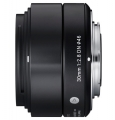
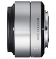

器材库 > APS画幅镜头 > 30/2.8 DN(A)

详细规格
镜头类型
标准镜头
发布日期
2013-01-29
厂家推荐价格
24,000.00 （日元）
焦距
30mm
等效35mm画幅焦距
60mm(M4/3)、45.5(NEX)mm
最大光圈
f/2.8
最小光圈
f/22
视角（对角）
39.6°(M4/3)、50.7°(NEX)
镜头结构
7片/5组
非球面镜片
2片
光圈叶片
7片
最近对焦距离
30cm
最大放大倍率
0.123
滤镜口径
46mm
镜头卡口
Micro 4/3, Sony E
防抖
否
颜色
银色, 黑/灰色
尺寸
60.8x40.5mm
重量
140g
附件
圆型遮光罩LH520-03
wolfgroup2014-11-02 21:414.83 分
操作性 5.00耐用性 4.50性价比 5.00解像力 5.00色彩还原 5.00机械结构 4.50
xiaoqiangvvv2014-03-26 02:274.92 分
操作性 5.00耐用性 5.00性价比 5.00解像力 5.00色彩还原 5.00机械结构 4.50
产品图 / 样片
